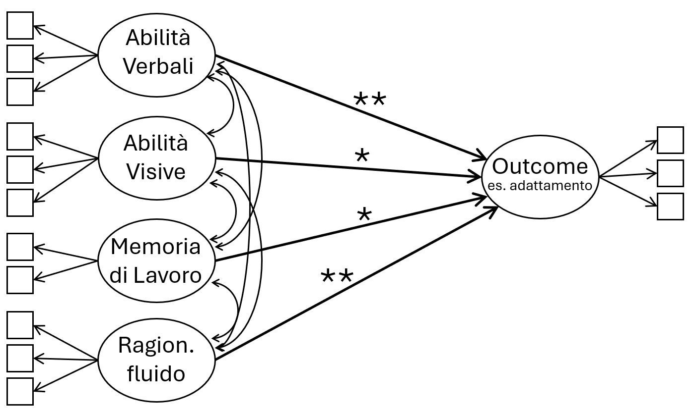

“Controllare per” ma dimenticare le cause comuni (i.e., “latenti”)
Autore/Autrice
Enrico Toffalini
Data di Pubblicazione
9 dicembre 2025
Questi appunti, ancora da riordinare sono stimolati da un recente e utilissimo post di Tommaso Feraco e da numerose cose viste negli anni, nonché dai miei stessi errori.
Riassunto: Non basta controllare per tante cose, serve un modello di misura e un vero DAG per l’inferenza causale. E i SEM sono lo strumento per implementarli e per testare davvero le teorie.
Poniamo di vedere in un paper una cosa tipo quella sotto. È un caso paradigmatico. Il paper racconta che diverse abilità cognitive predicono l’outcome (es. l’adattamento), ciascuna indipendentemente e above and beyond le altre. Assumendo che i fattori cognitivi siano causali rispetto all’adattamento, si può anche dire che ciascuna abilità cognitiva causa l’outcome al netto delle altre.

Figura 1. Diverse abilità cognitive sembrano predire indipendentemente lo stesso outcome
In realtà, nessuna delle abilità cognitive causa necessariamente l’adattamento, nemmeno sotto l’assunzione fatta. Perché? Perché probabilmente, almeno secondo i modelli ora mainstream, è un errore di inferenza causale.
I predittori (abilità verbali, ragionamento fluido, ecc.) evidentemente correlano tra loro: mostrano una positive manifold. Ma perché correlano? Questo è il problema. Sebbene esistano diverse teorie dell’intelligenza, la visione tuttora mainstream è che diverse abilità correlano perché condividono delle cause comuni. Queste cause comuni sono spesso definite “fattore generale” (g) dell’intelligenza. Si può opinare, si può dire che in tutto o in parte alcune abilità siano a loro volta causali rispetto ad altre (es. alcuni danno forte centralità alla memoria di lavoro/working memory, ritenendola a monte di altre abilità). Va bene: in qualsiasi caso, per fare inferenza valida dovremmo partire da un DAG delle relazioni causali, in cui non ci si limita a dire “le cose correlano”, ma si cerca di dare conto del perché.
Se prendiamo il caso più semplice, quello mainstream, assunto dai modelli gerarchici delle abilità cognitive quali il CHC, possiamo assumere che le diverse abilità cognitive correlino anche solo perché condividono cause comuni (il fattore g). Se implementiamo questo modello correttamente, senza dover raccogliere nessuno dato in più, usando solo quello che abbiamo già nel dataset, potremmo scoprire che tutti gli effetti precedentemente “scoperti” spariscono, si azzerano, non sono più significativi.
Figura 2. Una volta aggiunto un fattore sovraordinato che spiega la positive manifold tra i predittori assumendo cause comuni tra essi, potremmo scoprire che è tale fattore che spiega l’outcome, non i fattori specifici
Per gli utenti di R che conoscono il pacchetto lavaan, qui sotto c’è del codice R che simula e riproduce la situazione illustrata sopra (non è possibile fittare un modello che abbia contemporaneamente g e anche tutti i fattori cognitivi come predittori dell’outcome, ma si possono testare uno alla volta o a blocchi) 👇 Enjoy it!
Dire che le abilità cognitive “sono fattori distinti” per evitare il fattore sovraordinato elude il problema teorico, non considera l’esistenza di cause comuni, e comunque non spiega le intercorrelazioni. Sì, alla fine è tutto un problema di inferenza causale e di DAG, che sono cose che s’insegnano troppo poco all’università.
Spesso errori concettuali come quelli illustrati sopra si sono visti usare per accreditare il ruolo delle “Funzioni Esecutive” al di sopra della “Intelligenza” rispetto all’Adattamento, senza considerare che in quanto abilità cognitive anche le Funzioni Esecutive sono teoricamente sottoposte alle cause comuni delle abilità cognitive (g); la cosa andrebbe comunque testata seriamente.
Spesso si considera che controllare per “Ragionamento fluido” / intelligenza fluida sia sufficiente e paragonabile a “controllare per intelligenza generale”: anch’io sono caduto spesso in questo equivoco; ma no, “Ragionamento fluido” non è uguale a g (es. Gignac, 2015).
Di solito la situazione è anche peggiore di come mostrato sopra, perché ci si limita a variabili osservate, senza nemmeno ricorrere ai SEM.
Anche se avete un solo indicatore per ogni abilità cognitiva, potete fare un sem lo stesso, dovendo però forzare quanta componente di abilità e quanta di rumore ci sia nell’indicatore osservato.
Il problema si ripresenta spesso in vari ambiti (ad esempio modelli longitudinali).
Il preciso pattern di coefficienti di regressioni nel modello “sbagliato” dipende da quanto fortemente ciascuna abilità cognitiva particolare riflette le cause comuni (g).
“g” non è un’entità mistica, sono solo le cause comuni.